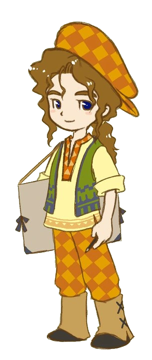

阿吉
アギ
CV.
寺崎裕香
诞生日
冬28日
喜欢的颜色
黄色
一个喜欢画画的艺术家型男孩。
对自己喜欢的东西很有天赋，并能把它变成自己的东西。
尽管外表如此，还很喜欢吃东西。 一旦饿了，就会立刻失去注意力。

最喜欢
：蛋包饭
喜欢
：巧克力、鸡蛋、核桃、月泪草
讨厌
：杂草、小孩子讨厌的料理类、全部酒类、蜻蜓类、鱼类
最讨厌
：米粥
爱情事件
事件 1
灰心♥
条件
地点
：牧场前
日期
：一、二、六、日
天气
：晴、阴、雪
时间
：8:00〜11:59
选项
是个好地方哟
いい場所だよね
(愛情度＋3000)
没什么特别感觉
変わってるね
(愛情度－2000)
事件 2
紫心♥
条件
地点
：镇长家
日期
：一、三、四、六、日
天气
：晴、阴、雪
时间
：13:00〜16:59(六日〜13:59)
选项
你人真好
優しいんだね
(愛情度＋3000)
很麻烦吧
大変だね
(爱情度不变)
事件 3
蓝心♥
条件
地点
阿吉家
日期
：三、四、五
天气
：晴、阴、雪
时间
：6:00〜13:59
其他
：凯文的好感度在 5000 以上
选项
注意点
注意する
(愛情度＋3000、凯文的好感度+500)
看情况
様子を見る
(愛情度－3000)
事件 4
黄心♥
条件
地点
：
日期
：一、二、六、日
天气
：晴、阴、雪
时间
：6:00〜13:59
选项
再好好看一下
ちゃんと見てもらわなきゃ
(愛情度＋3000)
就这样放弃了？
もうやめたら？
(愛情度－5000)
求婚
红心♥
条件
购买双人床以后
送出青之羽毛